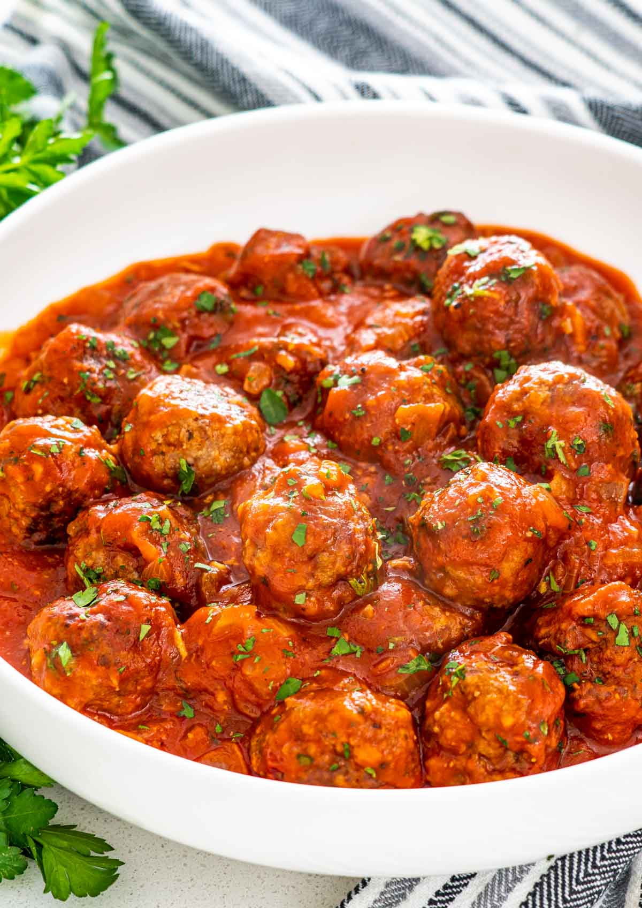

Meatballs Recipe

Description
This recipe creates the most tender and tasty meatballs. They are crisp and great for a family dinner or date night! Instructions are sourced from Anne Burrell at The Food Network.
Ingredients
- Extra-virgin olive oil
- 1 large onion
- Salt
- 2 cloves garlic
- 11/2 pound ground beef, veal, pork, or turkey
- 2 eggs
- 1 cup Parmigiano
- 1 cup breadcrumbs
- Marinara sauce
Instructions
- Coat a large saute pan with olive oil, add the onions and bring to a medium-high heat. Season the onions generously with salt and cook for about 5 to 7 minutes. The onions should be very soft and aromatic but have no color. Add the garlic and the crushed red pepper and saute for another 1 to 2 minutes. Turn off heat and allow to cool.
- In a large bowl combine the meats, eggs, Parmigiano, parsley and bread crumbs. It works well to squish the mixture with your hands. Add the onion mixture and season generously with salt and squish some more. Add the water and do 1 final really good squish. The mixture should be quite wet. Test the seasoning of the mix by making a mini hamburger size patty and cooking it. The mixture should taste really good! If it doesn't it is probably missing salt. Add more. Add more anyway.
- Preheat the oven to 350 degrees F.
- Shape the meat into desired size. Some people like 'em big some people like 'em small. I prefer meatballs slightly larger than a golf ball. Coat a large saute pan with olive oil and bring to a medium-high heat. Brown the meatballs on all sides. Place them on a cookie sheet and bake them in the preheated oven for about 15 minutes or until the meatballs are cooked all the way through. If using right away, add them to your big pot of marinara sauce. If not using right away, they can be frozen for later use. Serve with pasta and sauce or just eat them straight out of the pot! YUM!